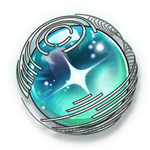
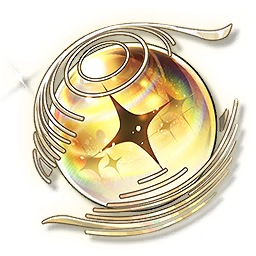

Guía del gacha
Una guía para comprender el funcionamiento del sistema gacha de Wuthering
Waves.
última actualización: 08/06/2025
El sistema gacha de Wuthering Waves funciona como un sistema de "tiradas" o "invocaciones" similar al de otros juegos gacha, donde los jugadores utilizan una moneda especial del juego para obtener personajes y armas exclusivas para ellos.
INVOCACIÓN
El sistema gacha en Wuthering Waves funciona como una
lotería que permite a los jugadores obtener nuevos personajes y armas. Este sistema se
presenta dentro del
juego bajo el nombre de "Invocación", y es accesible desde el
menú principal una vez que el jugador ha avanzado lo suficiente en la historia inicial. Como en otros
juegos gacha, la experiencia se basa en el azar, pero existen mecanismos que equilibran las
probabilidades
para asegurar que los jugadores eventualmente consigan recompensas valiosas, incluso si no tienen suerte
al principio.
Para realizar tiradas en los banners, necesitarás usar Astritas (la moneda del gacha) o Marea
Radiante
(Una suerte de boletos que funcionan de la misma manera que las Astritas).
Tanto las Astritas y Mareas Radiantes pueden obtenerse de diversas formas dentro del
juego, como misiones, eventos y
ciertas tiendas.
- Puedes intercambiar 160 Astritas por 1 Marea Lustrosa, 1 Marea Radiante o 1 Marea de Forja.
- Mareas Lustrosas se usan en el banner de Novato, Permanente de Personaje y Permanente de Arma.
- Mareas Radiantes se usan en el banner de Evento de Resonador destacado.
- Mareas de Forja se usan en el banner de Evento de Armas.
Puedes obtener lo siguiente al invocar:
- 3★ Armas
- 4★ Armas
- 5★ Armas
- 4★ Resonadores
- 5★ Resonadores
Las estrellas indican la rareza del Resonador y las Armas. A mayor número de estrellas, mayor rareza (y dificultad de obtener).
Garantía 4★: Si no obtienes un Resonador o Arma 4★ tras
9
invocaciones, la tirada 10 está garantizada como 4★. El
contador se
reinicia cada vez que obtienes un 4★.
Garantía 5★: Si no obtienes un Resonador o Arma 5★ tras
79
invocaciones, la tirada 80 está garantizada como 5★. El
contador se
reinicia cada vez que obtienes un 5★.